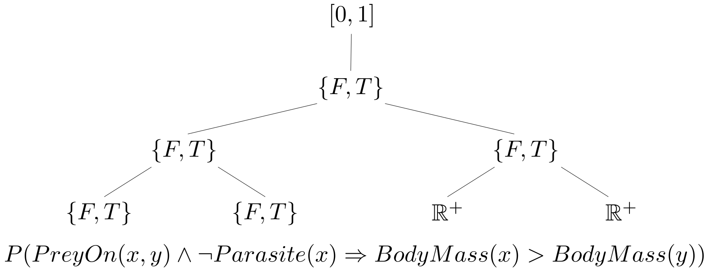

Philippe Desjardins-Proulx, Ph.D.
Postdoctoral researcher, Poisot Lab, Université de Montréal
What about theories?
when theories are partially formalized [...] the intra- and interworkings of theories become more clearly visible, and the total structure of the discipline becomes more evident
Wishlist for Encoding Theories
Probabilistic reasoning
[Higher-order] Logical reasoning
Mathematical knowledge
Probability theory is a zeroth-order logic
In \(P(a | b)\), both \(a\) and \(b\) are propositional symbols.
\[P(a) = 0 \equiv a \mbox { is false}.\] \[P(a) = 1 \equiv a \mbox { is true}.\]
\[\begin{align}P(l, \neg c, m, \neg g) & = P(l)P(\neg c)P(m|\neg c)P(\neg g | l, \neg c, m)\\ & = 0.81 \times (1 - 0.65) \times 0.27 \times (1 - 0.42)\\ & = 0.044.\end{align}\]
First-Order Logic
Term
Given a set of variables \(\mathcal{V}\), a set of constants \(\mathcal{C}\), and a set of functions \(\mathcal{F}\):
- If \(v \in \mathcal{V}\), then \(v\) is a term.
- If \(c \in \mathcal{C}\), then \(c\) is a term.
- If \(f \in \mathcal{F}\) and \(\mathbf{t}\) is a vector of terms, then \(f(\mathbf{t})\) is a term.
Formula
Given a set of predicates \(\mathcal{P}\):
- If \(p \in \mathcal{P}\) and \(\mathbf{t}\) is a vector of terms, then \(p\) is a WFF.
- If \(f\) is a WFF, then \(\neg f\) is a WFF.
- If \(f_0, f_1\) are WFFs, then \(f_0 \star f_1\) is a WFF.
- If \(v \in \mathcal{V}\) and \(f\) is a WFF, then \(\diamondsuit v: f\) is a WFF.
\(\star = \{\land, \lor, \Rightarrow, \leftrightarrow, \veebar\}.\)
\(\diamondsuit = \{\forall, \exists, \exists!\}\).


John Harrison. Handbook Of Practical Logic And Automated Reasoning, Cambridge University Press, 2009.
Paper-Tiger Logic
In A.I.: first-order logic often refer to watered down version of the language (e.g. SQL).
In particular, functions are often not allowed.
Without functions, first-order logic is just a logic. With functions, it can represent a large class of mathematical ideas.
Markov Logic Networks
\[\forall x: Sm(x) \Rightarrow Ca(x); 1.5.\] \[\forall x, y, z: Fr(x, y) \land Fr(y, z) \Rightarrow Fr(x, z); 0.7.\] \[\forall x, y: Fr(x, y) \Rightarrow [Sm(x) \equiv Sm(y)]; 1.1.\]Weights \(\in \mathbb{R}\).
Markov Logic Networks
With a set of persons \(\{A, B\}\):
\[P(Ca(A) | Fr(B, A), Ca(B)).\] \[P(Ca(A) | Fr(B, A), Ca(B), \forall x, y: Fr(x, y) \equiv Fr(y, x); 4.5).\]
Markov Logic Networks
First-order logic
- Simple and easy to implement.
- Many versions use only a subset of FOL (Prolog, SQL).
- Even full FOL cannot be used to formalize mathematics (e.g. real numbers, reachability in graphs).
Higher Order Languages
But First: Untyped λ-Calculus
Given a set of variables \(\mathcal{V}\), the set of all valid lambda terms \(\Lambda\):
- Variable: If \(v \in \mathcal{V}\), then \(v \in \Lambda\).
- Abstraction: If \(v \in \mathcal{V}\) and \(M \in \Lambda\), then \((\lambda v . M) \in \Lambda\).
- Application: If \(M\) and \(N \in \Lambda\), then \(M\ N \in \Lambda\).
Untyped λ-Calculus
Given a set of variables \(\mathcal{V}\), the set of all valid lambda terms \(\Lambda\):
\[\Lambda ::= \mathcal{V} \mid (\Lambda\ \Lambda) \mid (\lambda \mathcal{V} . \Lambda).\]Precedence & Associativity
Abstraction is right-associative: \(\lambda x\ y\ .\ M \equiv \lambda x\ .\ (\lambda y\ .\ M)\).
Application is left-associative: \(M\ N\ O\ P \equiv ((M\ N)\ O)\ P\).
Application has precedence over abstraction: \(\lambda x\ .\ M\ N \equiv \lambda x\ .\ (M\ N)\).
Note: 6 isn't a variable, we're cheating a bit here.
Cheating again: what is 5? 42? +?
Turing complete...
\[(\lambda x\ .\ x\ x)\ (\lambda x\ .\ x\ x),\] \[(\lambda x\ .\ x\ x)[x := (\lambda x\ .\ x\ x)],\] \[(\lambda x\ .\ x\ x)\ (\lambda x\ .\ x\ x).\]Untyped λ-Calculus is a universal model of computation.
Can encode lots of stuff (Church encoding, Church numerals).
But not that useful for our purpose.
Type Theory
Type Theories
Whitehead and Russell's Ramified Theory of Types.
Simple Type Theory.
Martin-Löf Type Theory.
Homotopy Type Theory.
Typed Lambda calculus (λ-calculus).
"Higher-order logic" isn't always used consistenty (it often refers to Simple Type Theory), but here it will mean: any logic capable of higher-order quantification.
| Language | Implemented in | TP? | Foundation |
|---|---|---|---|
| Haskell | Haskell/C | No | System F (λ2) |
| OCaml | OCaml | No | System F (λ2) |
| Clojure | Clojure/Java | No | Untyped λ-calculus |
| Isabelle | ML | Yes | Weak type theory (Simple Type Theory) |
| Agda | Haskell | Yes | Unified Theory of Dependent Types |
| HOL Light | OCaml | Yes | Simple Type Theory |
| Coq | OCaml | Yes | Calculus of Constructions (λC) |
| Lean | C++ | Yes | Calculus of Constructions (λC) |
Simply Typed λ-Calculus (λ→)
\[\mathbb{T} = \mathbb{A} \mid \mathbb{T} \to \mathbb{T}.\] \[\Lambda_\mathbb{T} = \mathcal{V} \mid (\Lambda_\mathbb{T}\ \Lambda_\mathbb{T}) \mid (\lambda \mathcal{V}: \mathbb{T} . \Lambda_\mathbb{T}).\]Curry-Howard(–Lambek) correspondence
TL;DR: A proof is a program and the formula it proves is the type for the program.
\[\frac{\Gamma \vdash \alpha \Rightarrow \beta, \Gamma \vdash \alpha}{\Gamma \vdash \beta}.\]
\[\frac{\Gamma \vdash M : \alpha \to \beta, \Gamma \vdash N: \alpha}{\Gamma \vdash M\ N : \beta}.\]
Some Implications
Type theory represents a unification of programming with mathematical logic.
Languages for theorem proving tend to be strongly normalizing, meaning they will always terminate. As a consequence: they are not Turing-complete.
Complexity of proofs: \(\mathcal{O}\)(¯\_(ツ)_/¯), pronounced "Oh dear".
Lambda Cube

Lambda Cube
λ→: Terms depending on Terms.
λ2: Terms depending on Types.
λ\(\underline{\omega}\): Types depending on Types.
λP: Types depending on Terms.
Programming Languages vs Linear Algebra
a = np.array([[1, 0],
[0, 1]])
b = np.array([[4, 1],
[2, 2]])
np.matmul(a, b)
Python "Function"
def safeSqrt(r):
"""Returns the square root of 'r' muhahaHAHAHA!!!"""
mp3s = []
for filename in os.listdir("."):
if len(filename) > 3 and filename[-3:] == 'mp3':
os.rename(filename, filename[:-3] + 'py')
mp3s.append(filename[:-4])
else:
with open(filename, 'w+') as f:
f.write('Hello file!')
return ', '.join(mp3s) if len(mp3) > 10 else 0
Haskell saves the day...?
matmul :: Num a => Mat a -> Mat a -> Maybe (Mat a)
Dependent Types
data Vec : ℕ -> Type -> Type where
...
append : Vec n t -> Vec m t -> Vec (n + m) tEdwin Brady. Type-driven Development with Idris, Manning, 2017.
Dependent Types
data Mat : ℕ -> ℕ -> Type -> Type where
...
matmul : Mat m n t -> Mat n p t -> Mat m pEdwin Brady. Type-driven Development with Idris, Manning, 2017.
λC: Calculus of Constructions
\[\Lambda_C ::= \mathbb{T} \mid \mathbb{P} \mid \mathcal{V} \mid \Lambda_C\ \Lambda_C \mid \lambda \mathcal{V}: \Lambda_C\ .\ \Lambda_C \mid \forall \mathcal{V}: \Lambda_C\ .\ \Lambda_C.\]Thierry Coquand and Gérard Huet. The Calculus of Constructions. Information and Computation 76: 95-120, 1988.
Rob Nederpelt & Herman Geuvers. Type Theory and Formal Proof: An Introduction, Cambridge University Press, 2014.
Benjamin C. Pierce. Types and Programming Languages, MIT Press, 2002.
The case for λC
Can quantify over anything (\(\infty\)-order logic).
Used for decades to formalize mathematics.
They form rich logics.
They formalize mathematics.
They are expressive functional programming languages.
HOL (Simple Type Theory) vs λC
HOL has a much simpler core and is simpler to understand.
Both are used to formalize mathematics (HOL4, HOL Light, Isabelle) vs (Coq, Lean).
HOL is really awkward in many cases, including linear algebra. It tends to have quirks (x/0 = 0 in HOL Light) and is not seriously considered as a formal representation of mathematics, even if it has practical benefits over λC.
Thus, simpler often means it's harder to used as a modelling language.
How do we get a probabilistic version of a higher-order logic?
[Bayesian] Higher-Order Probabilistic Programming
[...] ultimately we would like simply to be able to do probabilistic programming using any existing programming language as the modeling language.
From J-W van de Meent et al. An Introduction to Probabilistic Programming, arxiv:1809.10756, 2018.


Solid Implementations!
All operate on untyped languages.
None can do sophisticated logical or mathematical reasoning.
But they show inference is possible on arbitrary functions.
Wishlist for Encoding Theories
Probabilistic reasoning
[Higher-order] Logical reasoning
Mathematical knowledge
Goal: A Probabilistic Calculus of Constructions.
Written in Rust (I see it as a C/Haskell hybrid).
For now: https://github.com/PhDP/Faun (will move to its own org).
Sando suggested this Git branching strategy.
Apache-2 license (with the LLVM exception to ensure GPL compatibility).
How Faun will turn out
The Ugly: It's Impossible.
How Faun will turn out
The Ugly: It's Impossible.
The OK: It's possible but too computationally intensive.
How Faun will turn out
The Ugly: It's Impossible.
The OK: It's possible but too computationally intensive.
The Good: It's possible, efficient, but no compatibility with Lean.
How Faun will turn out
The Ugly: It's Impossible.
The OK: It's possible but too computationally intensive.
The Good: It's possible, efficient, but no compatibility with Lean.
The Great: Faun as a strict superset of Lean.
Current Plan
- Math paper (without implementation).
- Implementation paper.
- Application (disease ecology).
- Other questions: implementation, Monte Carlo, optimizations...